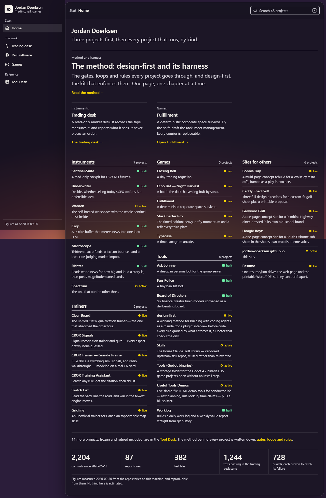
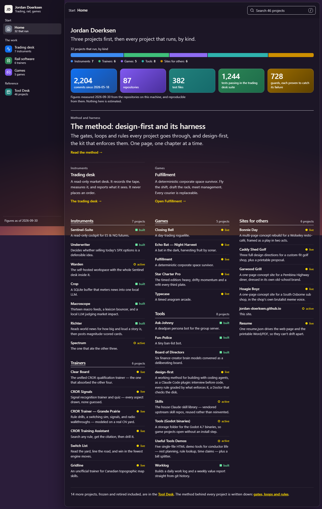
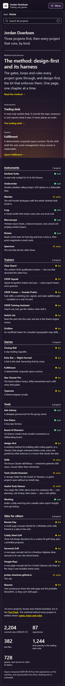
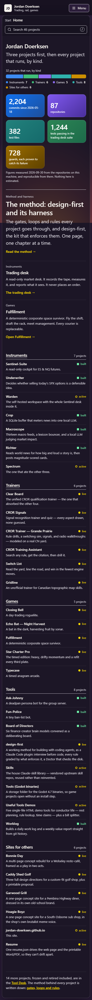
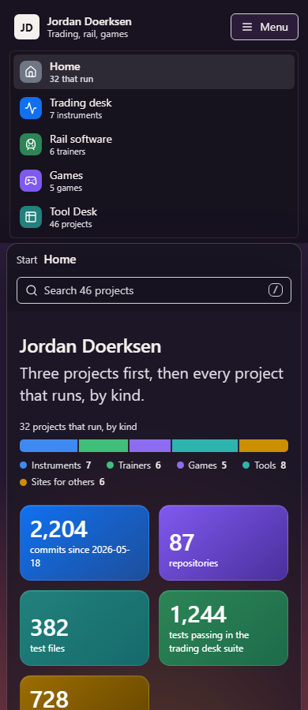
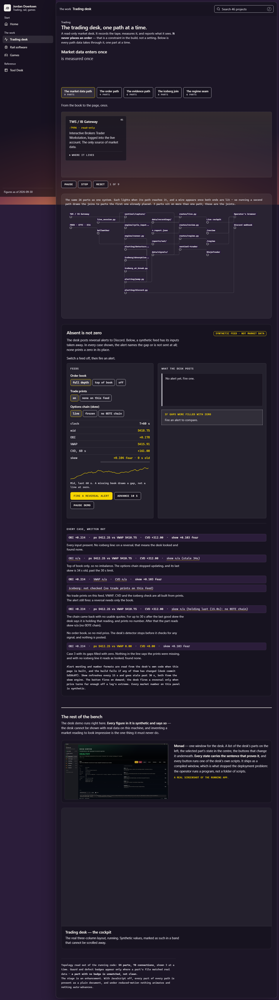
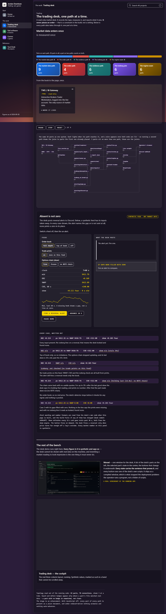
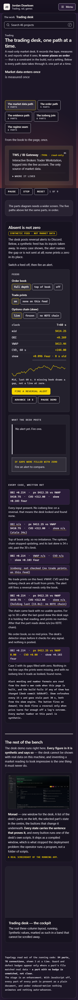
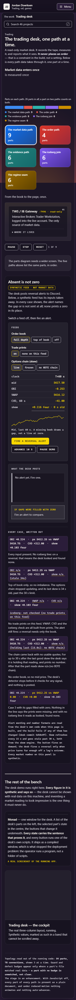

Front page panels, before and after
Item 41, CR-31. Home and the trading-desk page take the reference image's panels: an icon square and a count on each sidebar row, a stacked bar of the whole under the heading, and gradient tiles with one big number for peers. No waves. Every number is generated from the data. Each picture shows the top of the page and links to the whole page.
Home, 1280 wide




Home, 390 wide




The phone sidebar, open (after only)

Trading desk, 1280 wide




Trading desk, 390 wide




What was measured
python scripts/front_panels_check.pyrecomputes every sidebar count, bar segment and tile number fromdata/registry.json, the evidence data and the tier page's tours, and compares each with the built pages.node docs/skin-lab/front-panels/check.mjsmeasures white on the light end of every tile, walks the path buttons with Tab and Enter, and checks reduced motion, no script and the phone width.- Open for the owner: the tile waves need a real series (for example commits per week from git) or stay off; the rail and games pages and the Tool Desk keep today's body panels until he says otherwise.